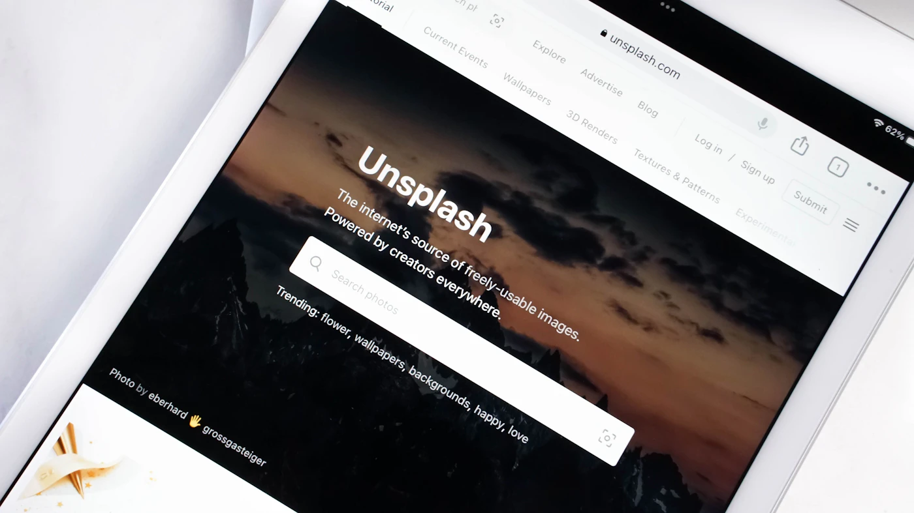

/ Presença profissional /
Coisas que deixam seu negócio com cara de grande
Marca, site, fotos e atendimento: 8 cuidados para apresentar bem o seu negócio e transmitir mais confiança.
/ BLOG BĀDON /
Ideias para entender, revisar e colocar em prática.
Marketing, inteligência artificial e tecnologia para o dia a dia do seu negócio.
10 artigos
/ Presença profissional /
Marca, site, fotos e atendimento: 8 cuidados para apresentar bem o seu negócio e transmitir mais confiança.
/ Inteligência artificial /
Astra, GPT-6.1 Sol e ChatGPT Work: entenda as mudanças e como testar a IA na sua rotina.
/ Inteligência artificial /
O que mudou em Haiku, Sonnet e Opus 5.5 e como comparar os modelos com tarefas reais.
/ Tecnologia /
Alternativas a apps da Adobe, jogos retrô e skills no GitHub: como a IA transforma observação em uma nova implementação.
/ Google Meu Negócio /
Cadastro, presença local, avaliações e métricas para aproximar sua empresa de quem procura na região.
/ Redes sociais /
Originalidade, métricas e testes: como analisar seu conteúdo sem depender de fórmulas de alcance.
/ Tráfego pago /
Oferta, página, atendimento e medição: uma revisão prática antes de investir em anúncios.

/ Sites /
Como organizar a informação e facilitar o próximo passo de quem chega ao seu site.
/ Google Meu Negócio /
Uma lista para conferir informações, fotos, avaliações e caminhos de contato do seu negócio.
/ Identidade visual /
Do Instagram à proposta comercial: como organizar cores, tipografia, imagens e modelos.
/ DA IDEIA À AÇÃO /
Conheça os serviços e o jeito de trabalhar da Bādon.